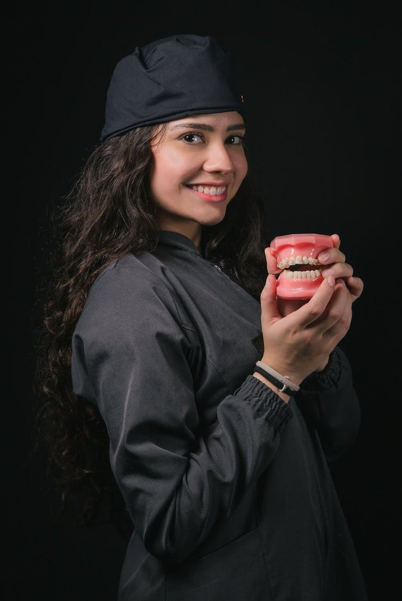

35 años
transformando
sonrisas
Ortodoncia para niños y adultos en Pasto, bajo la dirección del Dr. Mauricio Velásquez Morales, egresado de la Javeriana con más de 35 años de trayectoria y miles de pacientes atendidos.

Ortodoncia para niños y adultos en Pasto, bajo la dirección del Dr. Mauricio Velásquez Morales, egresado de la Javeriana con más de 35 años de trayectoria y miles de pacientes atendidos.

Somos la clínica de ortodoncia con mayor trayectoria en Pasto. Fundada en 1991 por el Dr. Mauricio Velásquez Morales, egresado de la Pontificia Universidad Javeriana, con especialización en ortodoncia y más de 35 años transformando sonrisas en Nariño.
Atendemos niños y adultos con tratamientos de ortodoncia tradicional, brackets cerámicos, alineadores invisibles y cirugía ortognática, siempre con criterio clínico riguroso y atención personalizada.


Contamos con equipos de diagnóstico modernos y un espacio diseñado para brindar la mayor comodidad. Desde la primera valoración hasta el retiro de brackets, acompañamos a cada paciente en cada etapa.
El Dr. Velásquez se formó en la Pontificia Universidad Javeriana, una de las mejores facultades de odontología y ortodoncia de Colombia.
Desde 1991 en Pasto. Décadas de experiencia clínica real, con casos de todas las complejidades en niños y adultos.
Desde los 6 años hasta adultos mayores. Cada plan de tratamiento se adapta a las necesidades y el ritmo de vida de cada paciente.
Tratamientos de ortodoncia adaptados a cada etapa de la vida. Corregimos la posición de los dientes y la mordida para una sonrisa funcional y estética.
Saber másAlineadores transparentes removibles para corregir la posición dental sin brackets visibles. Ideal para adultos que cuidan su imagen profesional.
Saber másBrackets tradicionales de alta precisión en opciones cerámicas (más estéticas) o metálicas. Resultados confiables con la técnica más probada en ortodoncia.
Saber másCorrección quirúrgica de malformaciones en los maxilares que no responden a ortodoncia convencional. Procedimiento de alta especialidad con acompañamiento completo.
Saber másAclaramiento dental profesional con tecnología Zoom. Resultados visibles en una sola sesión para una sonrisa más luminosa y segura.
Saber másConsultas generales, limpieza dental, tratamiento de encías y rehabilitación oral. Base sólida para que cualquier tratamiento ortodóntico tenga éxito duradero.
Saber más
U. Javeriana · Odontología 1987, Ortodoncia 1996
Más de 35 años de experiencia. Fundó Citysonrisas en 1991. Referente en ortodoncia en Pasto y Nariño, con miles de pacientes atendidos a lo largo de su trayectoria.

Tratamientos tempranos y preventivos
Desde los 6 años detectamos y corregimos problemas de mordida, espacio y posición dental para guiar el desarrollo correcto de la sonrisa.

Brackets y alineadores invisibles
No hay edad límite para una sonrisa alineada. Opciones discretas y eficientes para adultos que quieren resultados sin comprometer su imagen.
35 AÑOS DE TRAYECTORIA · MILES DE PACIENTES EN PASTO
"Llevé a mi hijo al Dr. Velásquez cuando tenía 9 años y hoy, a los 14, tiene una sonrisa perfecta. La atención siempre fue paciente y profesional."

"Me puse alineadores invisibles a los 38 años. Nunca pensé que a esta edad me alinearía los dientes, pero el proceso fue cómodo y los resultados increíbles."

"Llevo a toda la familia con el Dr. Velásquez. Lo de él es vocación, explica todo con calma y los resultados siempre superan las expectativas."

El Dr. Velásquez se formó en la Pontificia Universidad Javeriana, una de las mejores facultades de odontología y ortodoncia de Colombia.
Desde 1991 en Pasto. Décadas de experiencia clínica real, con casos de todas las complejidades en niños y adultos.
Desde los 6 años hasta adultos mayores. Cada plan de tratamiento se adapta a las necesidades y el ritmo de vida de cada paciente.
Resolvemos dudas, agendamos citas y damos seguimiento directamente por WhatsApp. Sin filas, sin esperas innecesarias.
Agenda una valoración con el Dr. Mauricio Velásquez en Pasto. Ortodoncia para toda la familia, con la trayectoria del especialista más experimentado de Nariño.
Atendemos de lunes a viernes. Agenda por WhatsApp para mayor comodidad.
Calle 18 #28-84, Edificio Cámara de Comercio, Oficina 707
Pasto, Nariño